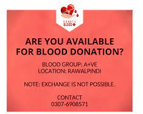

<ion-header [translucent]="true">
  <ion-toolbar>
    <ion-title>
      Home
    </ion-title>
  </ion-toolbar>
</ion-header>
<ion-content padding class="background"><

  <h1>                         </h1>
  <strong>Stream Feed</strong>
 <h1>                         </h1>
  <ion-slides pager="true" [options]="slideOpts">
    <h1>                         </h1>
    <ion-slide>
  <div class="slide1">
      
  </div>
    </ion-slide>
  <ion-slide>
    <div class="slide2">
      
    </div>
  </ion-slide>
  <ion-slide>
    <h1>Users Query here..</h1>
  </ion-slide>
</ion-slides>
</ion-content>
<ion-content class="ion-padding">
  <div class="grid_box">

  <ion-button  class="round" >Add Donor</ion-button>
  </div>

    <ion-button  class="round2" >Search Blood Bank</ion-button>


    <ion-button  class=round3 >Search Donor</ion-button>
  <ion-button  class=round4 >Chat</ion-button>

</ion-content>
